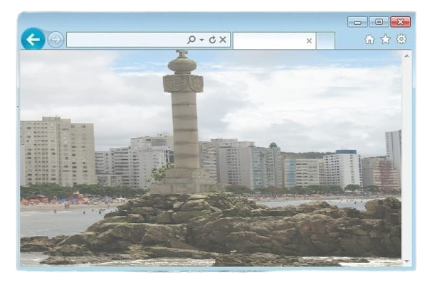
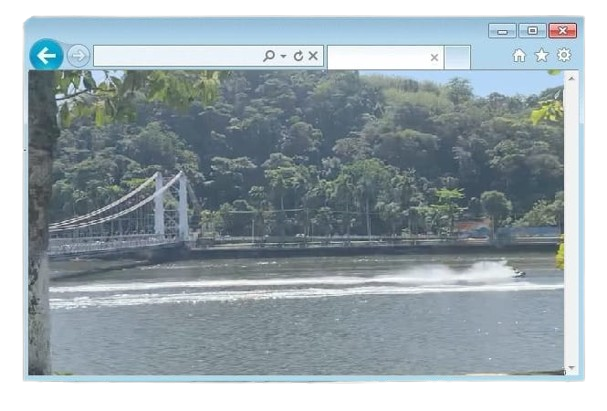

População: ~370 mil habitantes Localização: litoral de São Paulo
(Baixada Santista) Bioma: Mata Atlântica Fundação: 1532 (primeira
vila do Brasil) Aniversário: 22 de janeiro Característica: cidade
histórica e turística

A história de São Vicente começa antes da colonização portuguesa,
quando a região era habitada por povos indígenas que viviam da pesca,
da caça e da coleta, aproveitando os recursos naturais do litoral.
Em 1532, São Vicente foi oficialmente fundada por Martim Afonso de
Sousa, tornando-se a primeira vila do Brasil.
Esse fato marcou o início da organização administrativa portuguesa no
território e teve grande importância para a colonização do país.
Ao longo do período colonial, São Vicente teve papel fundamental no
desenvolvimento do litoral paulista, servindo como base para a
expansão para o interior e para a formação de outras cidades, como
Santos.
Com o passar do tempo, perdeu parte de sua importância
econômica para outras regiões, mas manteve seu valor histórico.
Hoje, São Vicente é reconhecida como um importante símbolo do início
da colonização do Brasil e também como um destino turístico no litoral
paulista.

Economia baseada no turismo, comércio e serviços Forte presença de
turistas no verão Importância histórica atrai visitantes Integra a
economia regional da Baixada Santista
População urbana grande e em crescimento Presença de desigualdades
sociais Economia influenciada pela sazonalidade do turismo Aumento
populacional na alta temporada
Localizada na Ilha de São Vicente (parte continental também)
Presença de praias, morros e manguezais Áreas de Mata Atlântica
Relevo com planícies e elevações
Marco do início da colonização do Brasil Ponte Pênsil Ilha Porchat
Praias como Itararé e Gonzaguinha